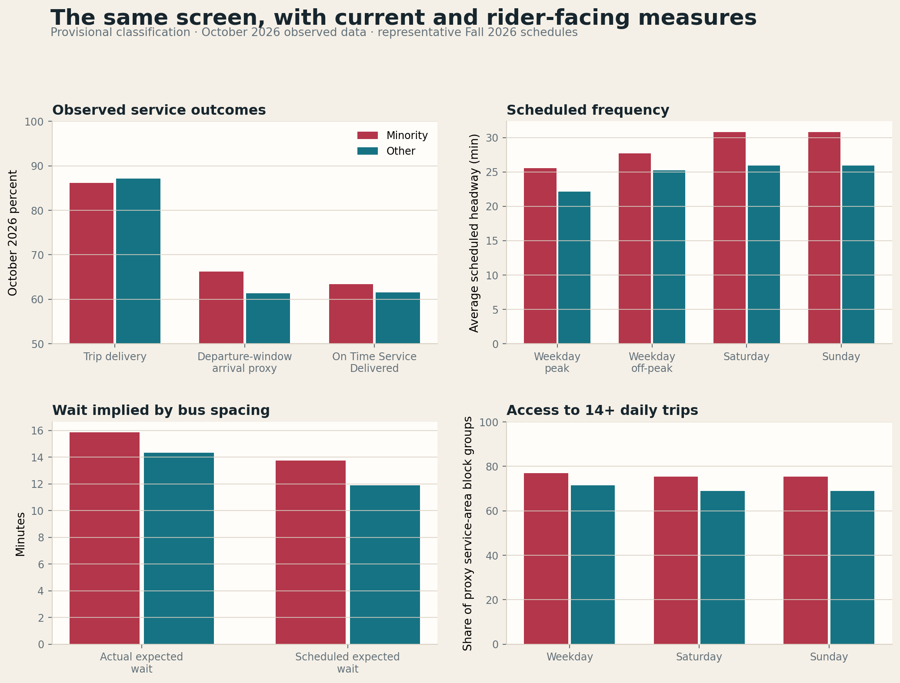
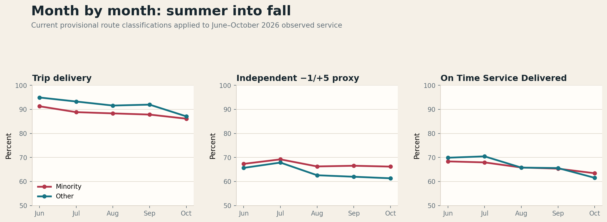

What the Board was asked to approve
At its October 28 meeting, AC Transit staff presented Staff Report 26-359 and asked the Board to approve the 2026 Title VI Program. The program documents the district’s compliance work from July 2023 through April 2026. Its monitoring appendix compares minority and non-minority routes on average loads, scheduled headways, on-time performance, service access, vehicle age, and the distribution of bus-stop amenities.
That is an important federal compliance exercise, but the analysis in the Board packet is far too coarse for meaningful public oversight. It reduces the network to two group averages without publishing the current route classifications, the underlying block-group and mileage calculations, or results by individual line, direction, and time of day. It also omits Service Operated and actual bus-spacing outcomes, so a group average cannot show which routes drive a disparity or what riders experienced. Laurel in Transit raised a related concern on Bluesky: the equity screen leaves out whether scheduled service actually ran and could make more direct use of rider demographic evidence.
AC Transit’s 2026 Title VI Program uses a straightforward route test: a census block group is “minority” when its people-of-color share is at or above the service-area average, and a line is a minority route when at least one-third of its mileage runs through those block groups. Staff then compares loads, scheduled headways, on-time performance, access, fleet age, and bus-stop amenities. A difference of 15 percent triggers the district’s monitoring threshold.
The Board packet does not include the underlying block-group universe or current route-by-route classification. For this provisional version, I used the district’s published 74 percent service-area people-of-color share as the block-group threshold, the latest 2020–2024 American Community Survey, and Fall 2026 route geometry. That produces 72 provisional minority routes out of 125 current routes, compared with 68 of 123 in staff’s Fall 2025 analysis.
The provisional route map
The map clips Transbay lines to the East Bay portion of their route, follows the district’s one-third-mileage rule, and uses the 74 percent provisional block-group threshold. Lines near one-third are inherently sensitive to the missing official geography: NL falls just below at 32.9 percent; L falls just above at 34.2 percent. Those are exactly the classifications to revisit first when the records arrive.
Loading interactive map…
Show the 72 provisionally classified minority routes
1T, 9, 14, 19, 22, 28, 30, 34, 35, 36, 40, 41, 45, 46L, 51A, 54, 56, 57, 60, 62, 70, 71, 72, 72L, 72M, 73, 74, 76, 86, 90, 93, 95, 96, 97, 98, 200, 210, 211, 216, 231, 239, 251, 281, 607, 620, 621, 623, 624, 625, 627, 629, 641, 652, 654, 657, 667, 675, 678, 680, 681, 689, 703, 801, 805, 840, 851, DB, DB1, L, NX3, O, and U.
Weekend service is one area where there is risk for violations
This comparison is about scheduled service, not actual service delivered. It measures the gaps written into the Fall 2026 timetable before accounting for missed trips, late buses, bunching, or long gaps. Even on paper, weekend service is threadbare: minority routes average one scheduled bus every 30.81 minutes, compared with 25.95 minutes on Saturday and 25.91 minutes on Sunday for other routes.
Those scheduled differences reach 15.8 percent on Saturday and 15.9 percent on Sunday—just over the district’s 15 percent monitoring screen and higher than staff’s 13.7 percent Fall 2025 result. A schedule already this close to the line leaves almost no margin for error. A small timetable cut, or repeated failure to deliver the trips already scheduled, can make the rider-facing disparity larger and put weekend service at greater risk of non-compliance.
| Scheduled period | Minority routes | Other routes | Disparity | Provisional screen |
|---|---|---|---|---|
| Weekday peak | 25.53 min | 22.13 min | 13.3% | Below 15% |
| Weekday off-peak | 27.72 min | 25.24 min | 8.9% | Below 15% |
| Saturday | 30.81 min | 25.95 min | 15.8% | Above 15% screen |
| Sunday | 30.81 min | 25.91 min | 15.9% | Above 15% screen |
The staff formula expresses the excess headway as a share of the minority-route headway. School lines in the 600 series and Early Bird lines in the 700 series are excluded, matching the packet. “Peak” is provisionally defined as 6–10 AM and 3–7 PM because the packet does not publish its peak-period cutoffs.
Actual service tells a more mixed story
The main result is that none of the observed-service group differences crosses the district’s 15 percent screen. That is an equity-screen result, not evidence that service is good. October service was poor across both groups: minority and other routes delivered only 86.1 and 87.1 percent of scheduled trips, and only 63.4 and 61.5 percent of eligible scheduled stops were reached within the rider window.
The staff report monitors schedule and on-time performance, but not whether scheduled trips actually ran, whether stops were reached in a useful rider window, or whether buses arrived evenly. October’s real-time data adds those measures. Minority routes delivered one percentage point less scheduled service and had a 1.5-minute-longer actual expected wait, but performed better on the independent punctuality proxy, On Time Service Delivered, and long-gap rate.

Observed service outcomes
Trip delivery is the share of scheduled trips detected as operated. Independent −1/+5 proxy is the share of observed eligible timepoints reached from one minute early through five minutes late. On Time Service Delivered is the share of eligible scheduled stops reached from one minute early through seven minutes late.
Scheduled frequency
Each bar is the average number of scheduled minutes between consecutive departures in the same route and direction. Peak means 6–10 AM and 3–7 PM; off-peak covers the remaining weekday hours. Smaller values mean more frequent scheduled service.
Wait implied by bus spacing
Actual expected wait converts the observed distribution of gaps between buses into the average wait faced by a randomly arriving rider. Scheduled expected wait applies the same calculation to timetable gaps. Smaller values are better.
Access to 14+ daily trips
This is the share of proxy service-area block groups whose centroid is within one-quarter mile of a stop scheduled for at least 14 trips that day. In this panel, red and teal identify minority and other block groups, not route classifications.
| Current measure | Minority routes | Other routes | Reading |
|---|---|---|---|
| Trip delivery | 86.12% | 87.09% | Minority routes 1.0 point lower; below the 15% screen |
| Independent −1/+5 arrival proxy | 66.19% | 61.33% | Minority routes better |
| On Time Service Delivered | 63.43% | 61.52% | Minority routes better |
| Actual expected wait | 15.85 min | 14.35 min | Minority routes 9.5% worse; below the 15% screen |
| Long gaps | 16.11% | 16.45% | Minority routes slightly better |
| Weekday access | 76.88% | 71.43% | Minority block groups better in the proxy service area |
From summer into fall, trip delivery declined across both groups
Pooling each month’s daily observations shows a persistent systemwide slide. Trip delivery fell from 91.3 to 86.1 percent on minority routes and from 94.9 to 87.1 percent on other routes between June and October. The gap between the groups narrowed from 3.7 percentage points to 1.0 point, but mainly because both groups worsened.
The independent −1/+5 proxy was higher on minority routes in every month, with the advantage growing from 1.7 points in June to 4.9 points in October. On Time Service Delivered moved differently: minority routes trailed in June and July, the groups were nearly even in August and September, and minority routes were 1.9 points higher in October. The comparison therefore does not show one group consistently doing worse on every measure; it does show that riders across the system received less of the scheduled service in a useful window as summer turned to fall.

Trip delivery
Operated trips divided by scheduled trips. A trip must be detected with a usable identifier; a missing observation may reflect dropped or partial service, an identifier mismatch, or a public-feed failure.
Independent −1/+5 proxy
On-time observed arrival timepoints divided by all observed eligible timepoints. The qualifying window runs from one minute early through five minutes late and is independent of the agency’s published OTP series.
On Time Service Delivered
Eligible scheduled stops reached from one minute early through seven minutes late, divided by all eligible scheduled stops. Its complement is outside rider window.
Which routes are in each comparison
These are the same provisional classifications used in the current and longitudinal charts. Search the list or scroll within the table; the mileage share shows how much of each line’s East Bay geometry falls within block groups at or above the provisional 74 percent people-of-color threshold.
Route classification reference
| Route | Provisional classification | Minority block-group mileage |
|---|
Aggregates can conceal much larger line-level failures. On Time Service Delivered ranges widely across both groups. The lowest current results include the 623, 800, 851, 72, 802, 805, 1T, O, and 72M. A Title VI monitor becomes more useful when the board can see those routes rather than only one average for each group.
October 2026 observed service
Where service falls outside the rider window most often
The rider window runs from one minute early through seven minutes late. For each scheduled stop included in the tracker, arrival within that window counts toward On Time Service Delivered. The bars show the complement: the share reached too early, reached more than seven minutes late, or not observed within the window. “Outside rider window” does not by itself identify why the stop missed the window.
The screen includes routes with at least 100 scheduled trips and a reported On Time Service Delivered result of at least 20 percent, matching the original analysis filter. Bars are sorted from the largest share outside the rider window.
All current routes
Explore the route-level results
Search or filter the full October dataset. Click a column heading to sort. The downloadable files preserve weekday, Saturday, and Sunday detail.
Bottom line
No 15% disparity flag—but poor service across both groups
The observed-service screen does not show minority routes performing at least 15 percent worse than other routes on any of these five measures. That should not be read as a clean bill of health: riders across both groups experienced weak trip delivery and roughly four in ten scheduled stops outside the rider window.
minority / other
minority / other
actual expected wait
The calculation expresses each difference as a share of the minority-route result and reverses good-is-low measures so positive values consistently mean an adverse result for minority routes. The 15 percent line is AC Transit’s local monitoring screen, not a federal threshold.
In short: the comparison does not find a 15 percent racial disparity in these observed measures. It finds service that is inadequate across the system.
Loads, vehicle age, and amenities are necessarily provisional
The realtime attributes feed contains fresh capacity and crowding bands, but no direct passenger counts. Applying the project’s published status-band estimates produces an average load of 15.8 riders on minority routes and 16.0 on other routes; average estimated trip maxima are 19.3 and 20.9. Staff treats lower loads on minority routes as non-adverse, but these values are estimates—not APC counts—and should not replace the requested load data.
The public fleet roster is dated December 2023. Matching its vehicle-number series to October observations covers 85.9 percent of minority-route snapshots and 93.3 percent of other-route snapshots. The resulting snapshot-weighted ages are 9.39 and 9.22 years, a 0.17-year difference. The coverage gap and stale roster make that descriptive only.
The current stop file has locations and route names, but no shelter, bench, trash-can, lighting, or realtime-sign attributes. It locates 2,457 stops in provisional minority block groups and 2,174 in other block groups. That is a stop-distribution check, not a reproduction of staff’s amenity-equity table. The requested amenity inventory is required to complete it.